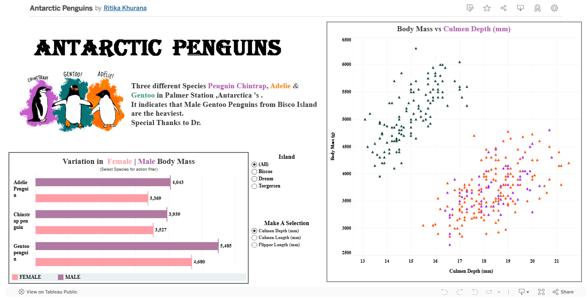

Projects
Automatic Annual Return Program
Built a Power BI dashboard to monitor churn risk using behavioral clustering across multiple business units.
Hello Alberta Program
Led data validation and performance reporting for a province-wide member engagement campaign.
Work1 Project
Developed and presented a comprehensive Power BI report for [insert purpose or audience]...
Tools: Power BI, Excel, SQL

Skills
SQL
Snowflake
Power BI
Excel
Python (Basic)
Data Storytelling
Stakeholder Engagement
Experience
Business Data Analyst — Alberta Motor Association
May 2022 – Present
- Design wireframes and storyboards for reporting requirements and insights
- Write and optimize SQL scripts for ad hoc and routine data pulls
- Generate and validate ad hoc reports supporting cross-team decisions
- Develop and maintain dashboards and board-level reports on KPIs
- Lead and contribute to data analysis, reporting automation, and process improvement projects
- Facilitate ideation and brainstorming to enhance data strategies and solve business challenges
- Collaborate with teams to translate data into actionable recommendations
Data Analyst — Reliance Industries Limited
Jun 2018 – Mar 2020
ng.